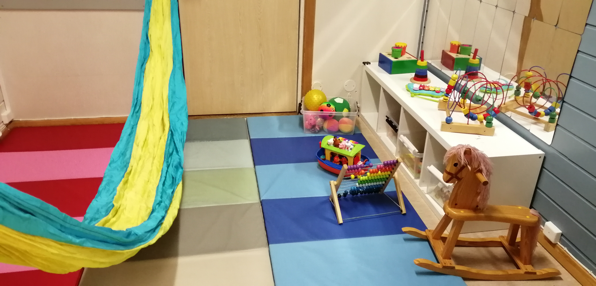
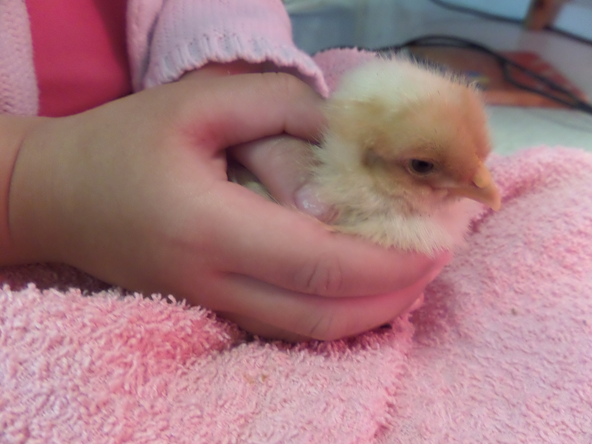
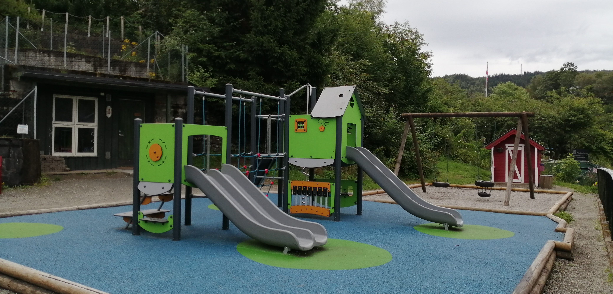
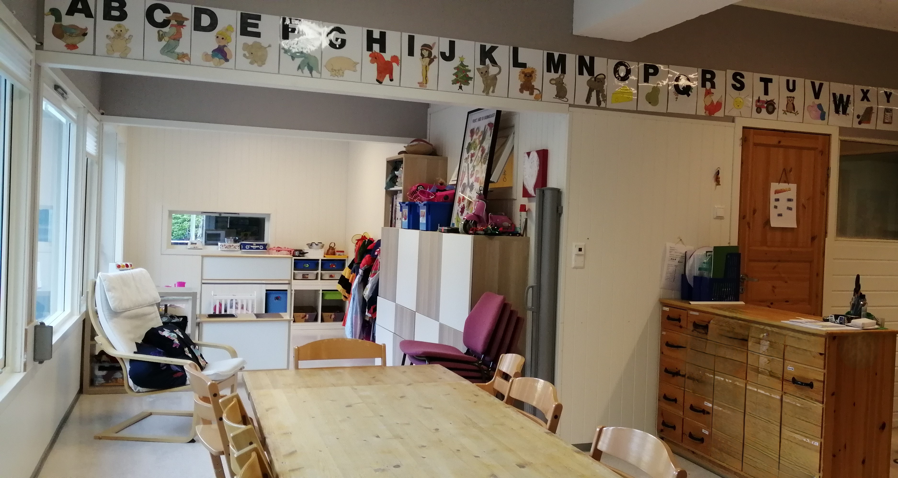
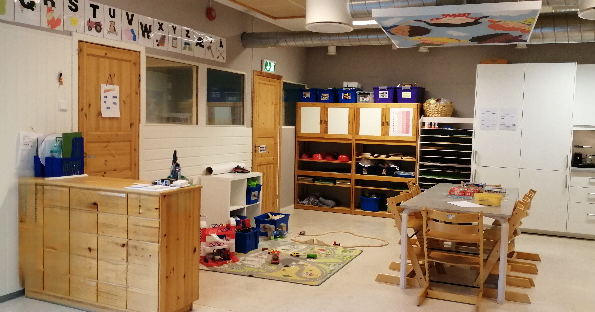
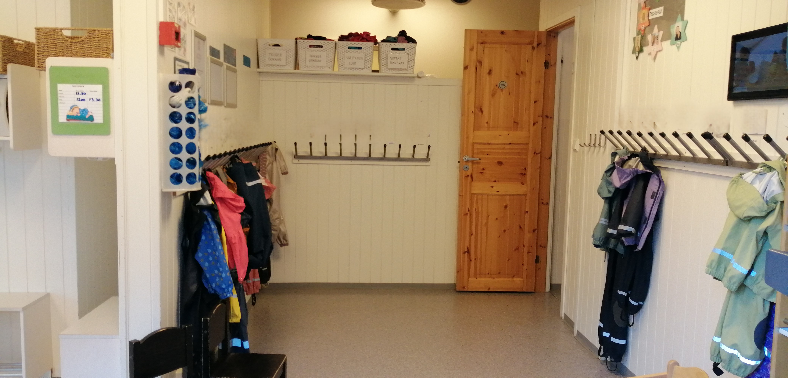

Soft & Organic - Trygt, varmt og lekent
En barnehage trenger et design som føles trygt, varmt og innbydende. Vi bruker myke pastellfarger, avrundede former og naturinspirerte elementer for å skape en følelse av omsorg og barnlig glede. Designet skal gjenspeile verdiene til en liten, kristen barnehage med fokus på trygghet, utendørsaktiviteter og nestekjærlighet.
Primær - Varm og trygg
Sekundær - Mild og leken
Aksent - Natur og friskhet
Aksent - Rolig og kreativ
Bakgrunn - Ren og varm
Tekst - Myk kontrast
Hovedvisningen bruker varme kremtoner med myke pastellfarger. Perfekt for en vennlig, innbydende følelse som passer for foreldre som besøker siden.
Dempede farger med behagelig kontrast for kveldslesing. Fargene justeres for å opprettholde den myke, varme estetikken selv i mørk modus.
Brukes til: Overskrifter, hero-tekst, hovedtitler
Brukes til: Undertitler, seksjonsoverskrifter
Brukes til: Brødtekst, beskrivelser, navigasjon
Autentiske bilder fra barnehagens lokaler og aktiviteter.

Indoor play area

Annual chicken hatching activity

Outdoor play area

Indoor area with activities

Indoor play corner

Wardrobe area
Konsistente prompts sikrer sammenhengende visuell stil på tvers av alle genererte bilder.
Disse retningslinjene sikrer en varm, trygg og profesjonell nettopplevelse for Nesttun Indremisjons Barnehage.